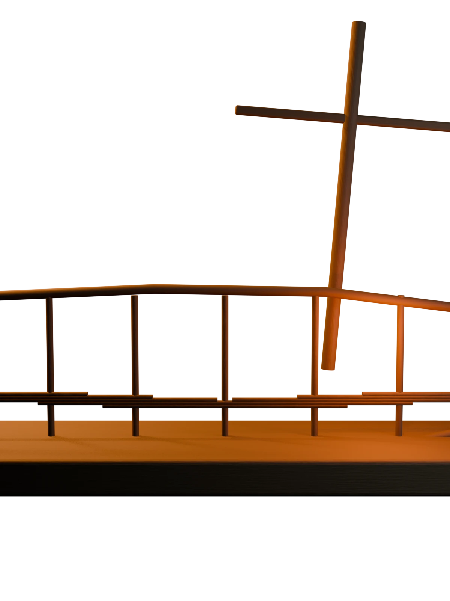

王船不是一艘船。它是被托付的愿望，是向海而行的一年，是一村人共同写下的平安。木骨承载香火，帆影承接风信。人们送它远行，也把一个更好的来年，轻轻交还给自己。造船的人把名字留在木纹里，巡境的人把脚步留在石板上，送行的人把未说出口的话交给风。潮水会抹平足迹，却不会带走愿望；当火光暗下去，海面仍记得每一个曾经抬头的人。 The royal boat is not merely a vessel. It carries the vows of a village, the scent of incense, and the promise of a safe return. Every plank holds the touch of a hand, every flag remembers a name, and every footstep in the old lanes becomes part of the prayer. The tide may erase the footprints, but it will not carry the vow away.
顺风
化吉
一船灯火，载一境祈愿。潮起时启程，风止处化吉。愿每一份敬畏与祝愿，都循着海风抵达远方。
MOVE TO ILLUMINATE 移动光标，点亮王船
顺风化吉
联合国教科文组织人类非物质文化遗产 · 送王船
A VOYAGE OF VOWS 向海而行，把平安带回来。
THE PASSAGE · 仪式五程
一程一愿
从木骨到海面，从请王到化吉。五段路程，不是仪式的目录，而是一群人共同完成的一次告别。
CHAPTER 01 · 王船工坊
造舟
The Vessel

一木一钉，先听见潮声，才学会抵达。
A plank learns the tide before it learns the sea.
- 地域
- 闽南沿海 · 王船工坊
- 工序
- 择木 · 立骨 · 覆板 · 安帆
以木为骨，以愿为帆。
CHAPTER 02 · 庙埕安座
请王
The Invitation
香火落座，众愿有主。一炷清香，唤海上远客。
Incense takes its seat; every vow finds a name.
- 场景
- 庙埕 · 王船安座
- 声音
- 诵经 · 鼓点 · 香灰落案
愿有所寄，行有所向。
CHAPTER 03 · 街巷巡境
巡境
The Passage
鼓声过街，祈愿顺着海风巡游。走过人间，才去往海上。
Drums cross the old lanes; blessings travel with the sea wind.
- 路线
- 庙门 · 老街 · 港口
- 队伍
- 旗队 · 鼓阵 · 护送信众
众人同行，风便有了方向。
CHAPTER 04 · 海上送王
送王
The Departure
火光把愿望交给潮汐。不是告别，是把平安托付给更远的地方。
Fire gives the vows to the tide; the royal boat begins its voyage.
- 时刻
- 黄昏 · 退潮 · 海风起
- 心愿
- 消灾 · 纳福 · 海上平安
火尽之后，愿望仍在远航。
送王，亦是送愿。
向海而行 · 顺风化吉
GO WITH THE TIDE · RETURN IN PEACE